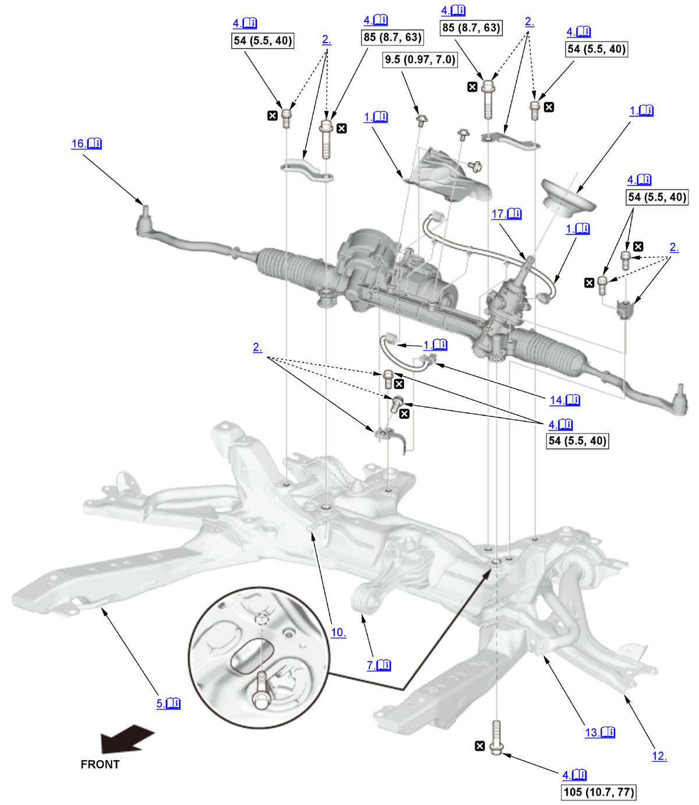
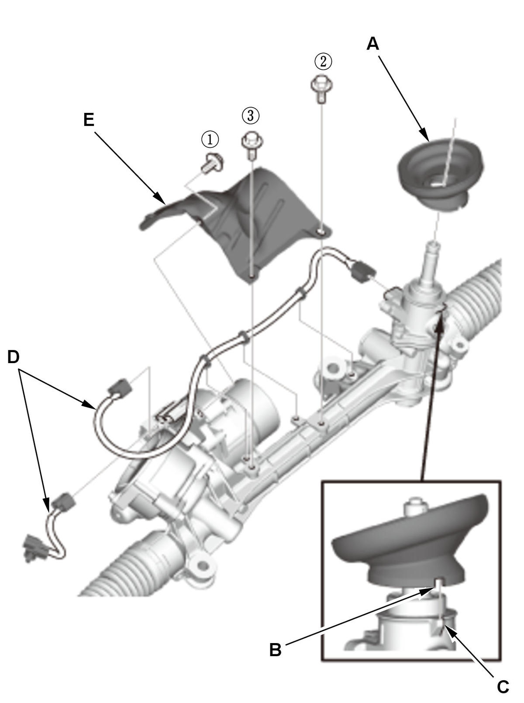
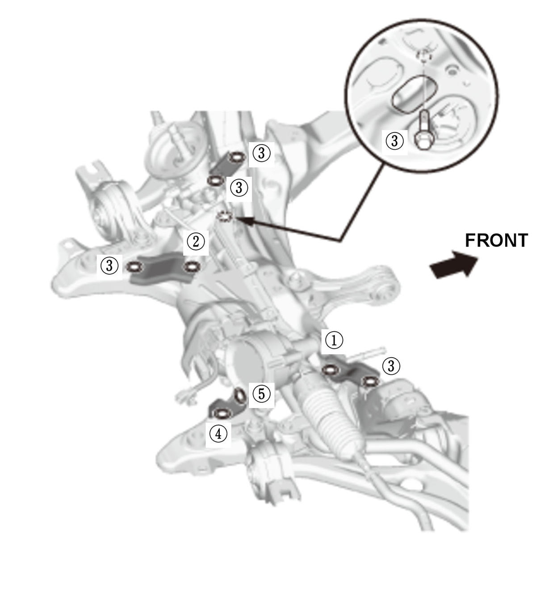
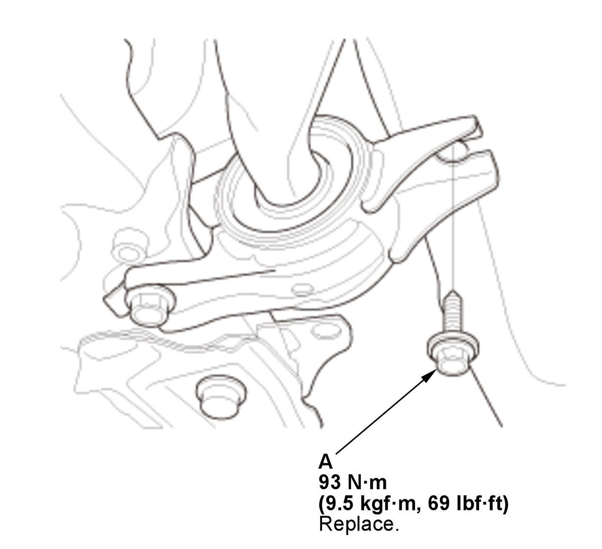
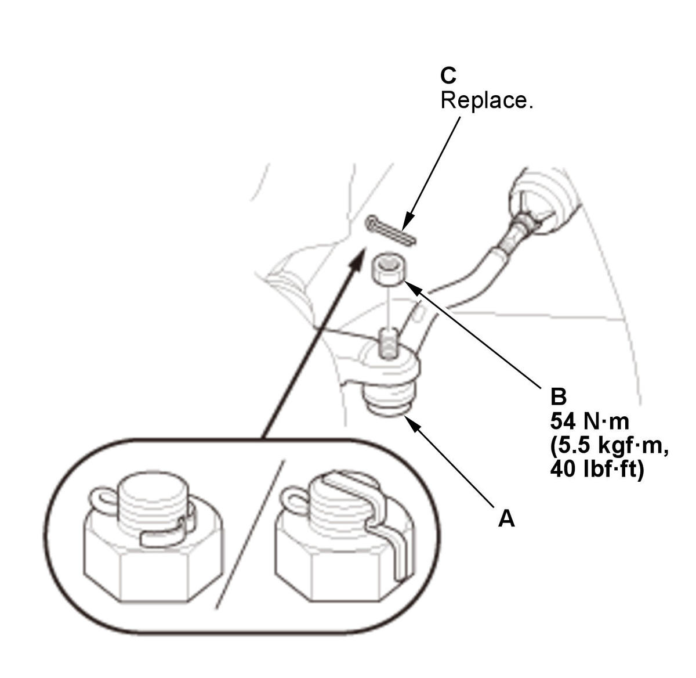

Steering Gearbox Removal and Installation (2016): Installation: Procedure
NOTE:
Numbered call-outs in figure pertain to list numbers in following procedure.
Fig 1: Exploded View Of Steering Gearbox Components With Torque Specifications For Installation (2016)

Courtesy of HONDA, U.S.A., INC. |
Detailed information, notes and precautions |
 |
Torque: N.m (kgf.m, lbf.ft) |
 |
Replace |
- Heat Shield, Harness, and Pinion Shaft Grommet - Install

Courtesy of HONDA, U.S.A., INC.1. Install the pinion shaft grommet (A). 2. Align the cutout portion (B) with the lug portion (C).
3. The grommet must not have a gap at the mating surface of the grommet and torque sensor.
4. Install the harnesses (D).
5. Loosely install the heat shield (E), then tighten the mounting bolts to the specified torque in the sequence shown.
- Steering Gearbox Stiffener - Loosely Install
- Steering Gearbox Mounting Bolt - Loosely Install
- Steering Gearbox Mounting Bolt - Tighten

Courtesy of HONDA, U.S.A., INC.1. Tighten the steering gearbox mounting bolts and the stiffener mounting bolts to the specified torque in the sequence shown. - Front Subframe - Install
1. Set the subframe adapter (VSB02C000016) on a transmission jack (A), line up the slots in the arms with the bolt holes on the corner of the jack base, and tighten the bolts. 2. Attach the subframe adapter to the front subframe (B).

Courtesy of HONDA, U.S.A., INC.4. Install the new lower arm mounting bolt (A) on both sides. - Front Brace - Install
- Torque Rod Mounting Bolt - Loosely Install
- Subframe Jack - Release
- Engine/Transmission Mount - Tighten
- Exhaust Pipe A - Install
- Intake Air Resonator - Install (1.5 L engine)
- Lower Arm Ball Joint - Connect (Both Sides)
- Stabilizer Link - Connect
1. Connect both sides of the stabilizer link to the stabilizer bar . - Connector (EPS Subharness) - Connect
1. Connect the connectors (A) and install the harness clip (B). - Engine Undercover - Install
- Tie-Rod End Ball Joint - Connect (Both Sides)

Courtesy of HONDA, U.S.A., INC.1. Wipe off any grease contamination from the ball joint tapered section and threads. 2. Connect the tie-rod ball joint (A) to the knuckle.
3. Install the nut (B) and tighten to the specified torque.
4. Install a new cotter pin (C).
NOTE: Bend the cotter pin as shown.
- Steering Joint - Connect
NOTE: If the center guide is in place, discard it.
- Steering Wheel Holder Tool - Remove
- Front Wheel - Install
- Steering Gearbox - After Install Symptom Check
1. With the tires raised off the ground, check for the following symptoms by turning the steering wheel fully to the right and left several times. Symptom Probable cause Rubbing sound coming from the lower steering column area. Steering column joint is contacting the cover. Noise from the lower steering column area, or a rough feeling during steering. Poor engagement of the pinion shaft serrations. Noise from around the steering wheel during steering. Poor engagement of the SRS cable reel with the steering wheel, or a damaged cable reel. - Steering Gearbox After Install - Check
1. After installation, check these items: - Start the engine, allow it to idle, and turn the steering wheel from lock to lock several times.
- Check that the EPS indicator does not come on.
- Check the steering wheel spoke angle. If steering spoke angles to the right and left are not equal (steering wheel and rack are not centered), correct the engagement of the joint/pinion shaft splines.
- Wheel Alignment - Check
- VSA Sensor Neutral Position - Memorize